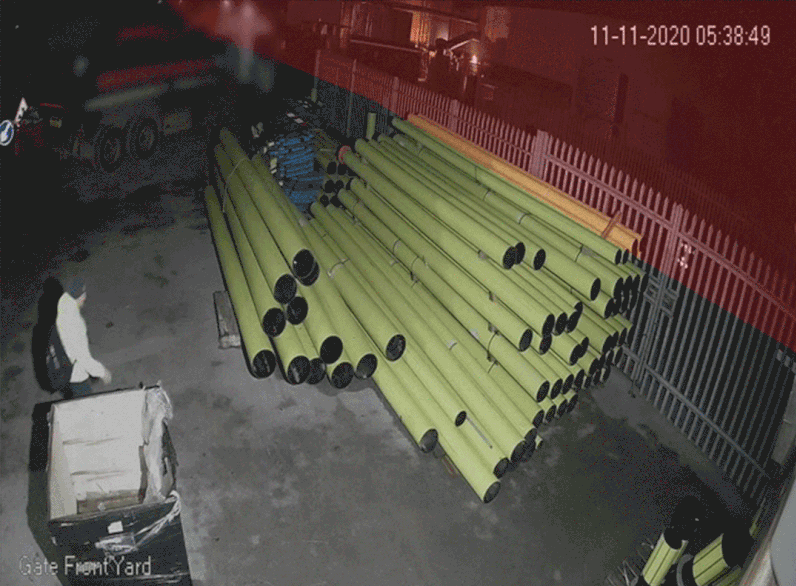

At Calipsa, I worked on machine learning models for CCTV alarm filtering.
The clips were short, often only a few frames. They came from real cameras with low light, low contrast, thermal sensors, rain, wind, shadows, compression artifacts, small objects, occlusions, and many unseen camera viewpoints. A useful model had to reduce false alarms without dropping the true events that operators cared about.
What I built
I led the end-to-end development of video object and motion detection systems, including the dataset curation process, evaluation framework, deployment metrics, and robustness analysis. The models improved false alarm reduction while maintaining very high recall across changing video quality and deployment distributions.
I also researched transfer to lower-resolution settings, down to roughly 60px by 80px, and thermal settings where labelled data was much less available.
